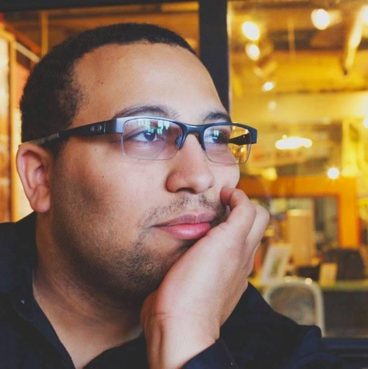

Hi! I'm Charles Scrivens
I am currently a senior at California State University East Bay studying Computer Science. I am from San Diego and and currently stay in the Bay Area. I have taken courses in Data Structures and Algorithms, Analysis of Algorithms, Computer Networking, Computer Architecture, and Web Development. I have programmed in the following languages: C++, Java, Python, Go(Lang), Javascript, PHP, and C#. I have also studied other technologies including databases, Networking tools, and Information Systems.
On a personal note, I enjoy movies, seeing friends, some traveling, and video games. San Diego and the Bay Area have been excellent areas to partake in all my activities and practice my craft, my programming. I continuously strive to continue learning new ways to improve in Computer Science and Software Engineering.